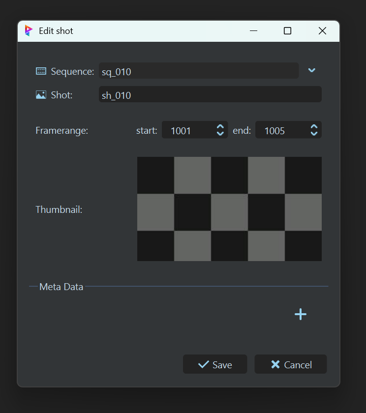
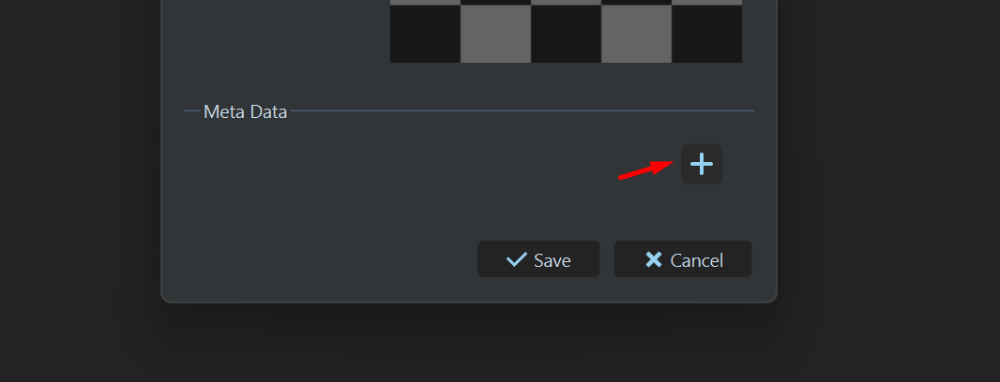
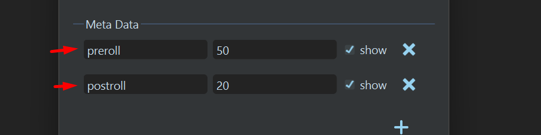
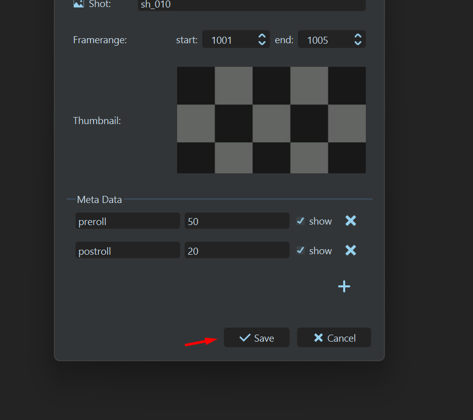

Questions et Réponses⚓︎
Qu'est-ce que Prism ?⚓︎
Prism est un logiciel open source de gestion d'assets conçu pour les projets d’animation 3D. Il automatise le flux de production, organise les fichiers et s’intègre facilement avec des outils comme Maya, Houdini ou Nuke. C’est l’outil que nous utilisons pour ce pipeline.
La plupart des fonctionnalités que nous exploitons proviennent en réalité d’un plugin Prism dédié à la gestion des ressources USD (non pris en charge nativement par Prism, sauf via un plugin payant).
Site officiel: prism-pipeline.com.
Comment installer le pipeline sur mon ordinateur ?⚓︎
Il vous suffit de suivre les instructions détaillées dans la section Installation de la documentation, puis de continuer dans la section Installer les outils
Comment installer le pipeline sur un serveur ?⚓︎
Qu'est ce qu'un département dans Prism ?⚓︎
Dans Prism, un département est une catégorie ou une division qui regroupe des tâches et des rôles spécifiques au sein d’un projet. Chaque département correspond généralement à une étape clé du pipeline de production, comme le modeling, le rigging, l’animation, le surfacing, etc.
Dans notre pipeline, la nomenclature des départements est très importante, car c'est avec cela que Prism va déterminer quel type de scène créer, quels produits sont attendus, et comment gérer les assets. Je vous demande donc de ne pas essayer de les renommer, et de me demander si vous voulez en créer un nouveau.
Comment créer un département dans Prism ?⚓︎
-
Selectionnez l'asset ou le shot dans lequel vous voulez créer le département.
-
Dans la colonne
Departments, faites un clic droit, puisAdd Department.... -
Une boite de dialogue s'ouvre. Sélectionnez le ou les département que vous voulez créer dans la liste, puis cliquez sur
Create.
Qu'est ce qu'une task dans Prism ?⚓︎
Une task dans Prism est une unité de travail spécifique assignée à un département. Chaque tâche représente une étape ou une activité particulière dans le processus de production.
On peu voir une task comme un "sous-ensemble" d'un département. Par exemple, dans le département de modélisation, on pourrait avoir des tâches distinctes pour la modélisation procédurale, la retopologie, les UVs, etc.
La nomenclature des tâches n’a pas trop d’importance pour l’instant, vous pouvez nommer vos tâches comme vous le souhaitez, et en créer autant que nécessaire.
Comment créer une task dans Prism ?⚓︎
Qu'est-ce qu'un framerange relatif ?⚓︎
Il existe deux manières de décrire le framerange d’un shot : en absolu ou en relatif.
En absolu : chaque shot possède un framerange dont le début est la suite directe de la fin du shot précédent.
Par exemple :
- le shot 010 va de la frame 1001 à 1100
- le shot 020 va de 1101 à 1200
- le shot 030 va de 1201 à 1300
En relatif : chaque shot commence à la même frame de référence, généralement la frame 1001.
Par exemple :
Pourquoi avoir choisi d'utiliser un framerange relatif plutôt qu'absolu ?⚓︎
Nous avons opté pour l'approche du framerange relatif pour plusieurs raisons pratiques :
-
Indépendance des shots : Chaque shot possède son propre espace temporel, indépendant des autres. Cela permet de le modifier, l’étendre ou le réduire sans risque de "casser" la continuité du projet global.
-
Évolutivité : Les projets évoluent constamment : ajout d’un nouveau plan, suppression d’un shot test, réorganisation d’une séquence… Avec le framerange relatif, ces ajustements se font rapidement et sans recalculs fastidieux.
-
Clarté et cohérence : Tous les shots démarrent sur la même frame de référence (par ex. 1001). Cela facilite la lecture, la comparaison, et évite toute confusion entre différents départs de framerange. Cela évite aussi des erreurs mathématiques lors du comptage des frames.
-
Collaboration fluide : Chaque artiste peut travailler sur son shot de manière autonome, sans dépendre des décisions prises sur les autres shots. Les changements locaux restent locaux.
Cependant, il y'a aussi des inconvénients :
-
Difficulté technique entre le travail à la séquence et au shot : Passer d’un layout de séquence (RLO) à un layout par shot (FLO) peut s’avérer complexe. Il faut veiller à bien gérer les offsets de frames entre les deux contextes pour éviter les décalages. Je vais essayer de faire cela automatiquement dans le pipeline, mais cela reste un point délicat.
-
Absence de continuité temporelle globale : Contrairement au framerange absolu, il n’existe pas de frise temporelle unique reliant tous les shots les uns aux autres. Cela peut compliquer la visualisation d’une séquence complète dans un contexte montage, de compositing ou de projection.
Qu'est ce que le préroll et le postroll ?⚓︎
Le préroll correspond à quelques frames ajoutées avant le début réel d’un shot. Pendant ce laps de temps :
- les rigs passent de la T-Pose (position neutre) à leur première pose animée,
- les artistes CFX peuvent lancer leurs simulations dans un état stable (cheveux, vêtements, accessoires…),
- les personnages peuvent être déplacés pour que tous les éléments dynamiques suivent correctement.
En résumé, le préroll sert de zone tampon qui prépare la simulation avant l’action visible du shot.
Le postroll correspond à quelques frames ajoutées après la fin du shot. Elles servent surtout à stabiliser ou conclure les simulations, mais sont utilisées plus rarement que le préroll.
Comment définir le préroll et le postroll d'un shot dans Prism ?⚓︎
-
Rendez-vous dans la boite de dialogue d'édition du shot (soit
au moment de sa création, soit en faisant unclic droit sur le shot puis "Edit Shot Settings...").
 -
Cliquez sur le petit bouton
"+"en bas de la fenêtre pour créer des metadonnées personnalisées (Meta Data).
 -
Dans le champ
de gauche, entrezprerollpour le préroll, oupostrollpour le postroll, puis rentrez les valeurs souhaitées dans lechamp de droite(en frames).
 -
Cliquez sur
Savepour enregistrer les modifications.

{kind=link}
{kind=link}
{kind=link}
{kind=link}
Qu'est ce qu'un variant en USD ?⚓︎
Un variant en USD est un mécanisme permettant de stocker plusieurs versions ou options d’un même élément dans un seul fichier. Cela permet, par exemple, de définir différentes variantes de couleur, de niveau de détail (LOD), ou de configuration pour un asset sans dupliquer toute la géométrie.
Chaque variant est regroupé dans un variant set (ensemble de variantes). On peut ensuite choisir dynamiquement quelle variante utiliser lors de l’assemblage de la scène.
Cela facilite la gestion des alternatives et rend le pipeline plus flexible, tout en évitant la multiplication des fichiers.
Dans notre pipeline, pour simplifier les choses, nous n'utilisons qu'un seul variant set par asset, simplement nommé variant. Un variant peut faire changer le Modeling Low, le Modeling High, ou le Surfacing. Il est de votre choix de décider ce que chaque variant modifie.
Vous pouvez par exemple créer plusieurs models high, avec des densités differentes pour simuler un systeme de LOD. Ou avoir plusieurs surfacings pour un même model pour faire des variations de couleur.
Ou meme mixer les deux :
variant 0 = model A - LOD 0 + surfacing A
variant 1 = model A - LOD 1 + surfacing A
variant 2 = model A - LOD 2 + surfacing A
variant 3 = model B - LOD 0 + surfacing B
variant 4 = model B - LOD 1 + surfacing B
variant 5 = model B - LOD 2 + surfacing B
Qu'est ce qu'un asset ?⚓︎
Un asset est un élément de contenu 3D autonome utilisé dans la production. Cela peut être un personnage, un objet, un décor, un accessoire, etc. Chaque asset est conçu pour être réutilisable et modulaire, afin de faciliter l’assemblage des scènes.
Les assets suivent une structure précise : ils possèdent un dossier dédié, des versions, des produits exportés, et peuvent contenir des variantes (variants).
En résumé, un asset est toute entité 3D indépendante qui peut être créée, modifiée, versionnée et utilisée dans différentes scènes ou plans.
Dans notre pipeline, chaque asset contient un fichier asset.usd qui référence les différents éléments de l'asset (modeling, surfacing, rig, etc) et leurs variants.
Qu’est-ce qu’un product dans Prism ?⚓︎
Un product dans Prism est un élément exporté depuis un logiciel afin d’être utilisé ailleurs (dans un autre département ou un autre logiciel). Il se distingue des scene files, qui correspondent aux scènes de travail dans lesquelles les artistes créent et modifient le contenu.
Les products peuvent être versionnés et possèdent toujours un Master.
Qu’est-ce qu’un master product ?⚓︎
Un master product dans Prism est la version principale et validée d’un product. C’est la dernière version approuvée et publiée.
Ce concept est essentiel, car les fichiers .usd se réfèrent directement aux master products. De cette manière, le lien reste toujours identique, tout en permettant un système de versioning efficace.
Pour créer cela, prism vas regarder la derniere version d'un product, et la copier dans le dossier master. Il vas aussi renomer le fichier pour enlever le numéro de version, de manière a ce que tous les futurs master products, peu importe la version dont ils proviennent, aient le même nom.
Quelle est la difference entre un export et un publish ?⚓︎
Dans notre pipeline, nous faisons une distinction entre export et publish. Ces deux actions se ressemblent, mais elles n’ont pas le même rôle.
- Un export correspond à une sauvegarde destinée à un usage interne au même département.
- Exemple : si un asset est créé en procédural dans Houdini et que l’on veut l’ouvrir dans Maya, on effectue un export en .abc ou en .usd pour pouvoir le récupérer dans Maya.
- Un publish, en revanche, est la version validée et finale de l’objet, utilisée pour la communication entre départements. C’est une étape essentielle, car les fichiers .usd référencent directement les publish.
Quelle est la différence entre un char, un item, un module et un prop ?⚓︎
- Char : Abréviation de "character", un char est un personnage 3D, qui va être riggé et animé.
- Item : Un item est un objet 3D générique dans la scène, non animable.
- Module : Un module est un ensemble d'items regroupés pour former une partie cohérente d'une scène. Par exemple, un module peut contenir tous les éléments d'un bureau.
- Prop : Un prop est un objet 3D riggé et animable, qui n'est pas un personnage. Par exemple, une voiture ou une arme.
Toutes ces notions sont regroupées sous le terme générique d'assets.
Résumé :
| Notion | Char (Character) | Item | Module | Prop |
|---|---|---|---|---|
| Modélisé | ||||
| Surfacing | ||||
| Riggué | ||||
| Animable | ||||
| Groupe d'objets | ||||
| Exemple | Personnage | Chaise, livre | Bureau (ensemble) | Voiture, arme |
Comment sont gérées les problèmes de d'échelles entre les différents logiciels (centimètres, mètres) ?⚓︎
Le probleme d'echelle est essentiel pour un pipeline multi logiciel, principalement entre houdini et maya.
Pour faire simple, j'ai préféré de ne pas toucher aux unités natives des logiciels, mais de gérer les conversions a l'import et a l'export, en fonction du département.
Maya utilise et exporte des fichiers en cm:⚓︎
- Les fichiers usd de modélisation sont en cm.
- Les exports d'animation, de rig, de RLO et de FLO se font en cm.
Houdini utilise et exporte des fichiers en m:⚓︎
- En modélisation, il utilise le m, mais export en cm (transform juste avant l'export)
- A chaque fois que l'on importe un modeling, il ya un transform qui convertis de cm a m.
- A chaque fois que l'on importe un fichier animé qui proviens de maya, il y a un transform qui convertis de cm a m.
- A chaque fois que l'on utilise un asset usd, il reste tel quel.
Les assets USD sont en m, et contiennent une conversion de cm a m a l'interieur.⚓︎
Qu'est ce qu'un ghost ?⚓︎
Dans le pipeline, on considère qu'un ghost est une animation de référence que l'on importe dans la scène. On importe le cache d'une étape précédente (RLO ou FLO) pour s'en servir de guide dans l'étape actuelle.
Par exemple, dans le département d'animation, on importe les ghosts animés du FLO pour aider les animateurs à caler leurs animations.
Cela sert car par exemple, les rigs entre le RLO et le FLO sont différents et on peu repartir sur une base propre a chaque nouveau département.
On vas appliquer un shader spécial aux ghosts pour les différencier visuellement dans le viewport.
Ou placer les rigs de cameras (pour importer dans le RLO, FLO, et Animation) ?⚓︎
Pour accéder au dossier ou mettre votre rig de caméra, il faut vous rendre dans le projet, puis 00_Pipeline -> Templates.
C'est à cet endroit que vous pouvez mettre votre rig de caméra qui sera importé dans le RLO, FLO, et Animation. Le fichier doit s'appeler camera_template.ma.
Comment reporter un bug technique ?⚓︎
Il vous suffit de créer un ticket sur github, dans la section Issues. De cette façon, nous pourrons suivre et résoudre le problème plus efficacement.
Faites bien attention à préciser les étapes pour reproduire le bug, ainsi que l'environnement dans lequel il se produit. Cela m'aidera à comprendre et à résoudre le problème plus rapidement.
Voir comment créer une issue Github pour plus de détails.